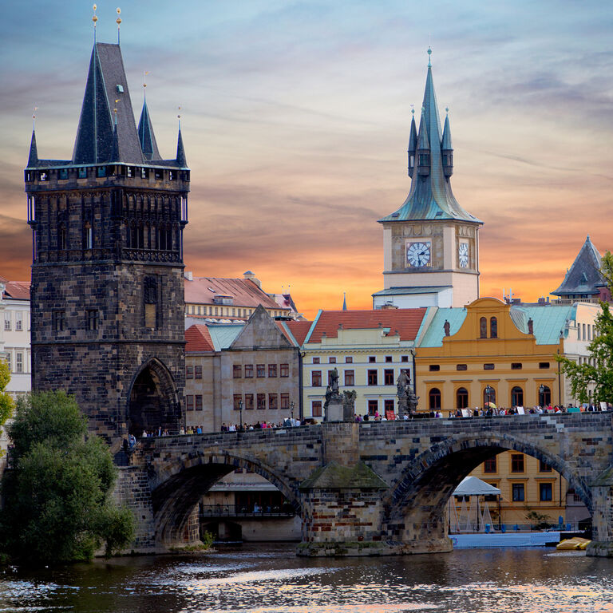
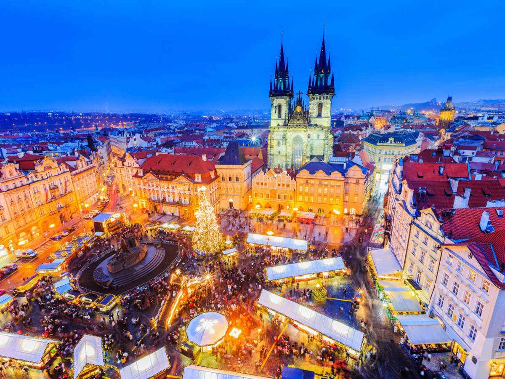
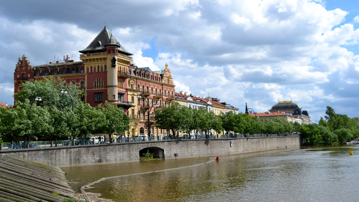

<!DOCTYPE html>
<html lang="en">
<head>
    <meta charset="UTF-8">
    <meta http-equiv="X-UA-Compatible" content="IE=edge">
    <meta name="viewport" content="width=device-width, initial-scale=1.0">
    <title>About</title>
    <link rel="shortcut icon" type="image/png" href="images/LOGO_PRAGUE.png">
    <link rel="stylesheet" href="about.css">
    
</head>
</html>
<body>
    <header>

    </header>
    <main>
    <div class="icon-bar">
        <a href="index.html">HOME</a>
        <a class="active" href="About.html">ABOUT</a>
        <a href="Lifestyle.html">LIFESTYLE</a>
        <a href="Events.html">EVENTS</a>
        <a href="Contact.html">CONTACT</a>

        
    </div>
    <div class="about-section">
        <h1>THE CITY OF A HUNDRED SPIRES</h1>
        <p>Prague is the capital and the biggest city of the Czech Republic. This enchanted city of scaffolds, houses of God, gold-tipped pinnacles and church towers is likewise the fourteenth biggest city in the European Union. The city is home to about 1.3 million individuals, yet its bigger metropolitan zone has roughly a populace of almost 2 million. Since the Middle Ages Prague has esteemed the standing of quite possibly the most wonderful urban areas on the planet just as the political, social, and monetary focus of focal Europe. 

            The city was established during the Romanesque time and prospered during the Gothic and Renaissance periods, it was additionally the seat of two Holy Roman Emperors and subsequently the capital of the Holy Roman Empire. Later Prague turned into a significant city to the Habsburg Monarchy and its Austro-Hungarian Empire, after World War I it turned into the capital of Czechoslovakia. In 1993, after the split of Czechoslovakia, Prague turned into the capital city of the new Czech Republic. The surface space of Prague is 496 square kilometers and has an all out populace of 1 226 697 individuals recorded in 2011. 
            
            The significant waterway is the Vltava River, which goes through the city at 31 km with the greatest width being 330 m. There is likewise an incredible number of islands on the Vltava River, for example, the enchanting Kampa Island, the Slav Island nearby the National Theater, or Children Island. These islands serve not just as an ideal escape from the buzzing about of the downtown area, but at the same time are frequently the site of numerous social occasions. There are 22 managerial zones and 112 cadastral regions in the city of Prague.</p>
      </div>
      
      <h2 style="text-align:center">The Magnificent Streets Of Prague</h2>
      <div class="row">
        <div class="column">
          <div class="card">
            
            <div class="container">
              <h2>Old Town Bridge Tower</h2>
        
              <p>This high-gothic pinnacle was planned, similar to the actual extension, by the recognized expert designer Petr Parléř guarding one finish of the Charles Bridge is perhaps the most flawless instances of gothic engineering in Europe. Its establishments were laid along with the establishments of the Charles Bridge. The darkened door was finished in 1380 and shapes part of the old fortress arrangement of Prague, worked to ensure the Old Town against northern intruders. Nonetheless, it additionally has a tasteful worth and with its remarkable sculptural beautifications is essential for the Royal Way. 

                Toward the finish of the Thirty Year War the western mass of the pinnacle was vigorously harmed by Swedish cannon fire. It was additionally here that the attacking Swedish armed force was repelled by a band of understudies and Jewish ghetto inhabitants. Luckily, the models by Petr Parléř at the pinnacle's eastern divider endure and work today we can see a picture sculpture of Emperor Charles IV and King Wenceslas IV with St. Vitus looking after them. On the floor underneath, there are sculptures of St. Sigismund, the supporter holy person of Luxembourg, and St. Adalbert, the benefactor holy person of Bohemia. At their legs, there is the sculpture of a lion, which peers down from the pinnacle.</p>
              
            </div>
          </div>
        </div>
      
        <div class="column">
          <div class="card">
            
            <div class="container">
              <h2>Old Town Square</h2>
              <p>Overwhelmed by the agonizing sculpture of Jan Hus, Old Town Square is one of the greatest and most lovely metropolitan spaces. When you rise up out of the rear entryway into the square you will end up on an excursion back on schedule, encircled by old structures, for example, the early Gothic spiky-beat Týn Church and Prague's Old Town Hall with a tall Gothic pinnacle and an awe inspiring Astronomical Clock. 

                Dating from the tenth century, it has been a primary public square and the focal commercial center for Prague. Arranged in the center is the workmanship nouveau sculpture of Jan Hus, the protestant reformer, consumed as a blasphemer. The sculpture was disclosed on 6 July 1915, at the 500th commemoration of Hus' passing. 
                
                In the northwestern corner of Old Town Square is the overwhelming extravagant Church of St. Nicholas, worked during the 1730s by Kilian Dientzenhofer, in which chamber shows are frequently held. From the beginning of time the square has been a position of significant political occasions and exhibits, deplorable occasions, for example, executions occurred here also.</p>
              
            </div>
          </div>
        </div>
      
        <div class="column">
          <div class="card">
            
            <div class="container">
              <h2>Smetanovo Embankment</h2>
        
              <p>In contrast with different dikes in Prague, this one is in no way, shape or form very touristy advertisement vivacious. Planned between 1841-1845, it is the most established dike in Prague and runds from the Legion Bridge to Křížovnické Square by Charles Bridge. 

                It was initially called Old Town Embankment, later, in 1894 it was renamed to Františe Embankment and from 1919 it was called Masaryk Embankment. During World War II it held two names, between 1940-1942 it was the Vltava Embankment and afterward from 1942-1945 Reinhard Heydrich Ufer. It held the name of the primary leader of Czechoslovakia T.G. Masaryk again after the conflict, and later it got its present name – Smetana Embankment. 
                
                Named after Bedřich Smetana, a productive and recognized Czech author, the embankement is an ideal territory for walks, unwinding, sunbathing and brags with a wonderful view Prague Castle, particularly toward the beginning of the day or evening, when the sun is low. Around evening time this territory gets bursting at the seams with clubbing as the unending number of bars and club open up to local people just as travelers. You will love going out and going through the late evening moving in one of the popular clubs.</p>
              
            </div>
          </div>
        </div>
      </div>
    </main>
</body>

